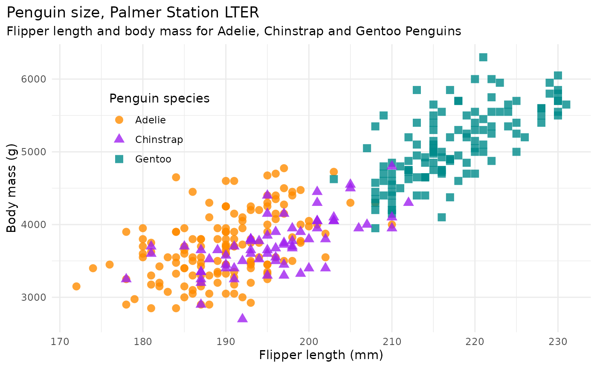
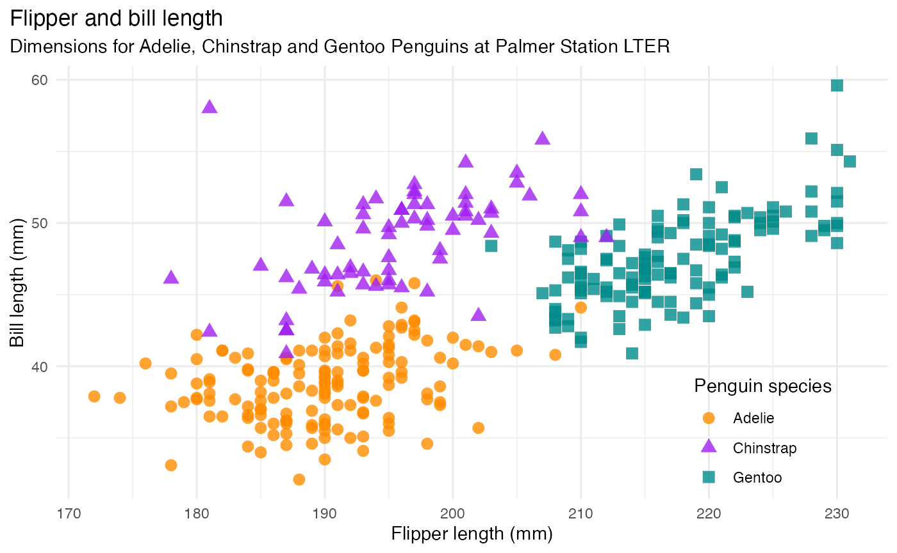
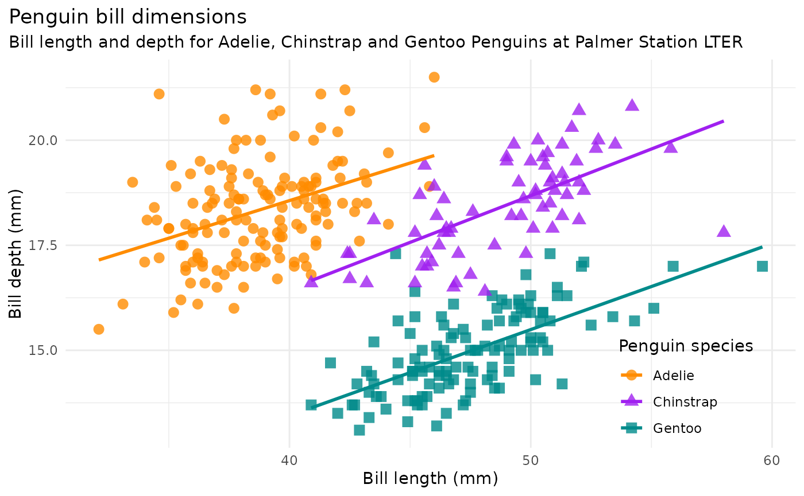
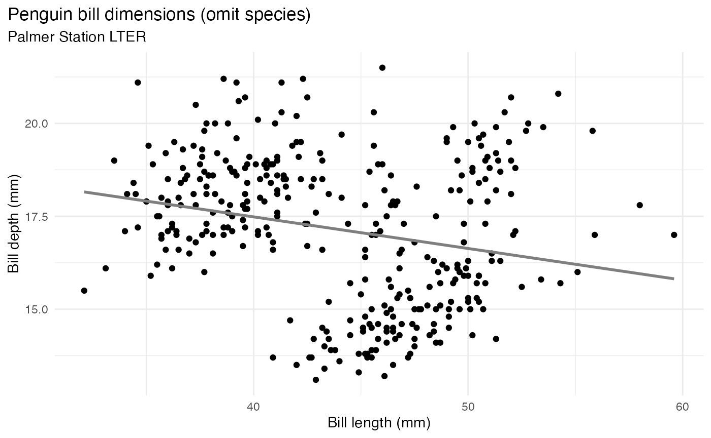
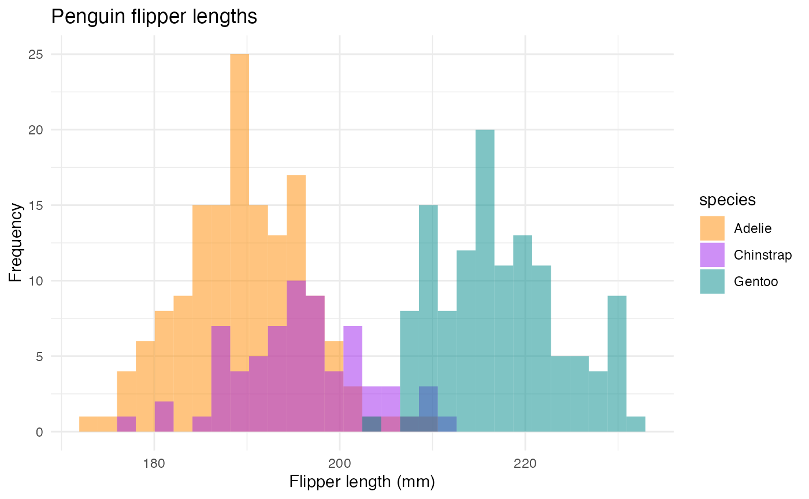
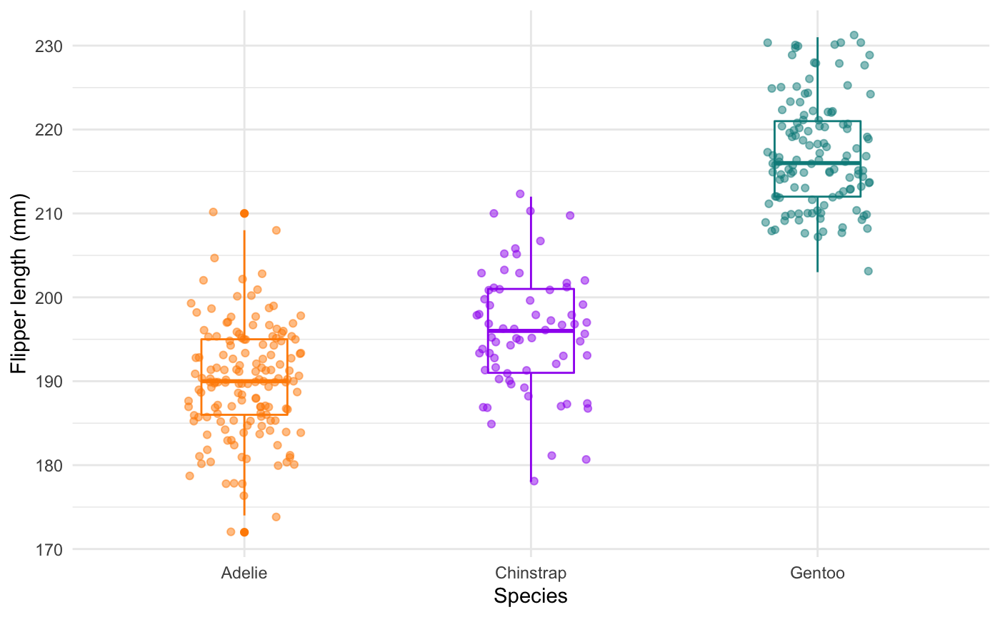
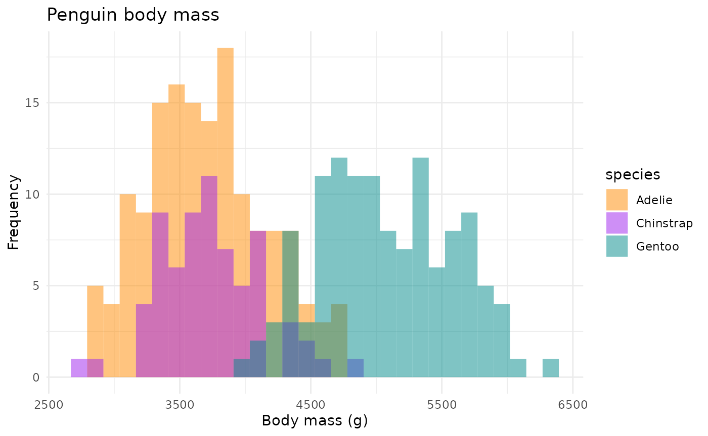

library(palmerpenguins)
library(ggplot2)
ggplot2::theme_set(ggplot2::theme_minimal())Penguin mass vs. flipper length
mass_flipper <- ggplot(data = penguins,
aes(x = flipper_length_mm,
y = body_mass_g)) +
geom_point(aes(color = species,
shape = species),
size = 3,
alpha = 0.8) +
scale_color_manual(values = c("darkorange","purple","cyan4")) +
labs(title = "Penguin size, Palmer Station LTER",
subtitle = "Flipper length and body mass for Adelie, Chinstrap and Gentoo Penguins",
x = "Flipper length (mm)",
y = "Body mass (g)",
color = "Penguin species",
shape = "Penguin species") +
theme(legend.position = c(0.2, 0.7),
plot.title.position = "plot",
plot.caption = element_text(hjust = 0, face= "italic"),
plot.caption.position = "plot")
#> Warning: A numeric `legend.position` argument in `theme()` was deprecated in ggplot2
#> 3.5.0.
#> ℹ Please use the `legend.position.inside` argument of `theme()` instead.
#> This warning is displayed once every 8 hours.
#> Call `lifecycle::last_lifecycle_warnings()` to see where this warning was
#> generated.
mass_flipper
#> Warning: Removed 2 rows containing missing values or values outside the scale range
#> (`geom_point()`).
Flipper length vs. bill length
flipper_bill <- ggplot(data = penguins,
aes(x = flipper_length_mm,
y = bill_length_mm)) +
geom_point(aes(color = species,
shape = species),
size = 3,
alpha = 0.8) +
scale_color_manual(values = c("darkorange","purple","cyan4")) +
labs(title = "Flipper and bill length",
subtitle = "Dimensions for Adelie, Chinstrap and Gentoo Penguins at Palmer Station LTER",
x = "Flipper length (mm)",
y = "Bill length (mm)",
color = "Penguin species",
shape = "Penguin species") +
theme(legend.position = c(0.85, 0.15),
plot.title.position = "plot",
plot.caption = element_text(hjust = 0, face= "italic"),
plot.caption.position = "plot")
flipper_bill
#> Warning: Removed 2 rows containing missing values or values outside the scale range
#> (`geom_point()`).
Bill length vs. depth
bill_len_dep <- ggplot(data = penguins,
aes(x = bill_length_mm,
y = bill_depth_mm,
group = species)) +
geom_point(aes(color = species,
shape = species),
size = 3,
alpha = 0.8) +
geom_smooth(method = "lm", se = FALSE, aes(color = species)) +
scale_color_manual(values = c("darkorange","purple","cyan4")) +
labs(title = "Penguin bill dimensions",
subtitle = "Bill length and depth for Adelie, Chinstrap and Gentoo Penguins at Palmer Station LTER",
x = "Bill length (mm)",
y = "Bill depth (mm)",
color = "Penguin species",
shape = "Penguin species") +
theme(legend.position = c(0.85, 0.15),
plot.title.position = "plot",
plot.caption = element_text(hjust = 0, face= "italic"),
plot.caption.position = "plot")
bill_len_dep
#> `geom_smooth()` using formula = 'y ~ x'
#> Warning: Removed 2 rows containing non-finite outside the scale range
#> (`stat_smooth()`).
#> Warning: Removed 2 rows containing missing values or values outside the scale range
#> (`geom_point()`).
Simpson’s paradox, omitting species in graph above:
bill_no_species <- ggplot(data = penguins,
aes(x = bill_length_mm,
y = bill_depth_mm)) +
geom_point() +
scale_color_manual(values = c("darkorange","purple","cyan4")) +
labs(title = "Penguin bill dimensions (omit species)",
subtitle = "Palmer Station LTER",
x = "Bill length (mm)",
y = "Bill depth (mm)") +
theme(plot.title.position = "plot",
plot.caption = element_text(hjust = 0, face= "italic"),
plot.caption.position = "plot") +
geom_smooth(method = "lm", se = FALSE, color = "gray50")
bill_no_species
#> `geom_smooth()` using formula = 'y ~ x'
#> Warning: Removed 2 rows containing non-finite outside the scale range
#> (`stat_smooth()`).
#> Warning: Removed 2 rows containing missing values or values outside the scale range
#> (`geom_point()`).
Some other graphs for brainstorming
There are a number of questions you could ask about differences between groups. Here are a couple histograms to consider.
flipper_hist <- ggplot(data = penguins, aes(x = flipper_length_mm)) +
geom_histogram(aes(fill = species),
alpha = 0.5,
position = "identity") +
scale_fill_manual(values = c("darkorange","purple","cyan4")) +
labs(x = "Flipper length (mm)",
y = "Frequency",
title = "Penguin flipper lengths")
flipper_hist
#> `stat_bin()` using `bins = 30`. Pick better value with `binwidth`.
#> Warning: Removed 2 rows containing non-finite outside the scale range
#> (`stat_bin()`).
Flipper lengths boxplots + jitter:
flipper_box <- ggplot(data = penguins, aes(x = species, y = flipper_length_mm)) +
geom_boxplot(aes(color = species), width = 0.3, show.legend = FALSE) +
geom_jitter(aes(color = species), alpha = 0.5, show.legend = FALSE, position = position_jitter(width = 0.2, seed = 0)) +
scale_color_manual(values = c("darkorange","purple","cyan4")) +
labs(x = "Species",
y = "Flipper length (mm)")
flipper_box
#> Warning: Removed 2 rows containing non-finite outside the scale range
#> (`stat_boxplot()`).
#> Warning: Removed 2 rows containing missing values or values outside the scale range
#> (`geom_point()`).
Body mass histograms:
mass_hist <- ggplot(data = penguins, aes(x = body_mass_g)) +
geom_histogram(aes(fill = species),
alpha = 0.5,
position = "identity") +
scale_fill_manual(values = c("darkorange","purple","cyan4")) +
labs(x = "Body mass (g)",
y = "Frequency",
title = "Penguin body mass")
mass_hist
#> `stat_bin()` using `bins = 30`. Pick better value with `binwidth`.
#> Warning: Removed 2 rows containing non-finite outside the scale range
#> (`stat_bin()`).
Facets
Include penguin sex:
ggplot(penguins, aes(x = flipper_length_mm,
y = body_mass_g)) +
geom_point(aes(color = sex)) +
scale_color_manual(values = c("darkorange","cyan4"), na.translate = FALSE) +
labs(title = "Penguin flipper and body mass",
subtitle = "Dimensions for male and female Adelie, Chinstrap and Gentoo Penguins at Palmer Station LTER",
x = "Flipper length (mm)",
y = "Body mass (g)",
color = "Penguin sex") +
theme(legend.position = "bottom",
plot.title.position = "plot",
plot.caption = element_text(hjust = 0, face= "italic"),
plot.caption.position = "plot") +
facet_wrap(~species)
#> Warning: Removed 11 rows containing missing values or values outside the scale range
#> (`geom_point()`).